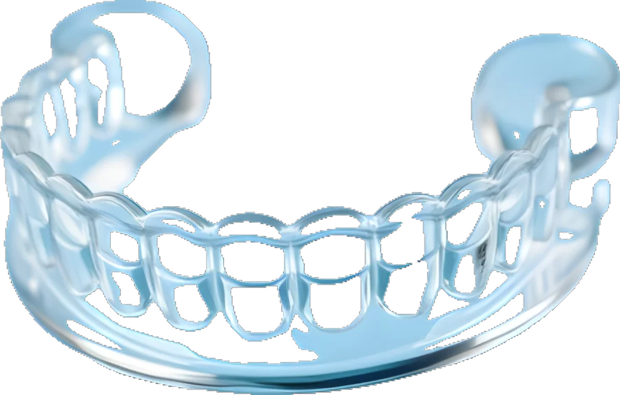
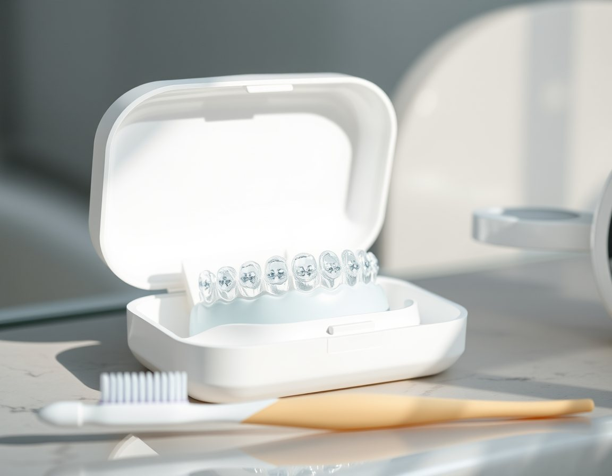
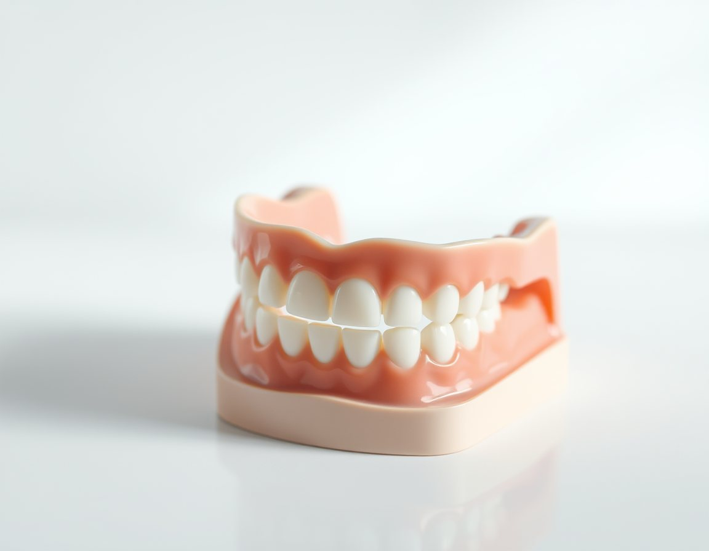
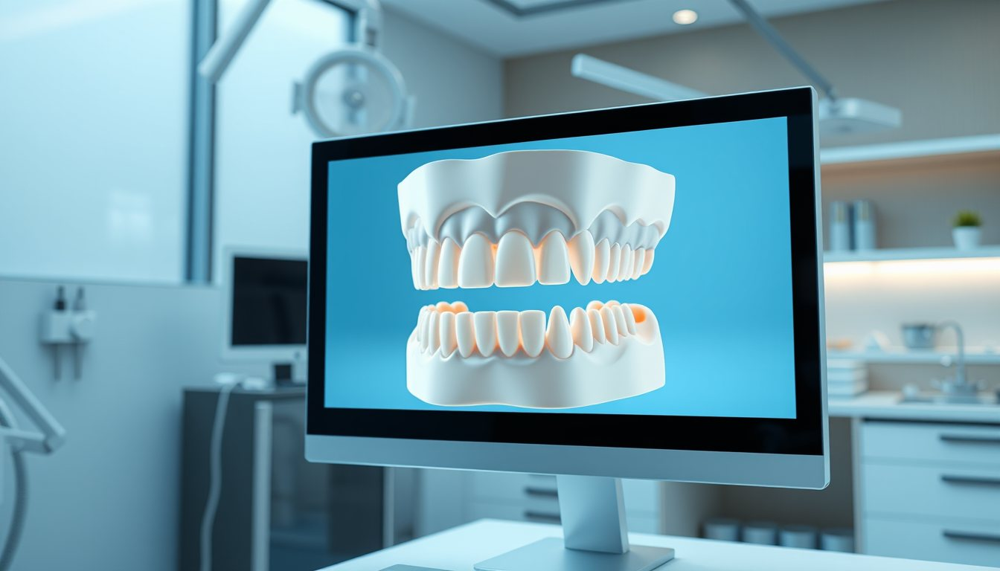
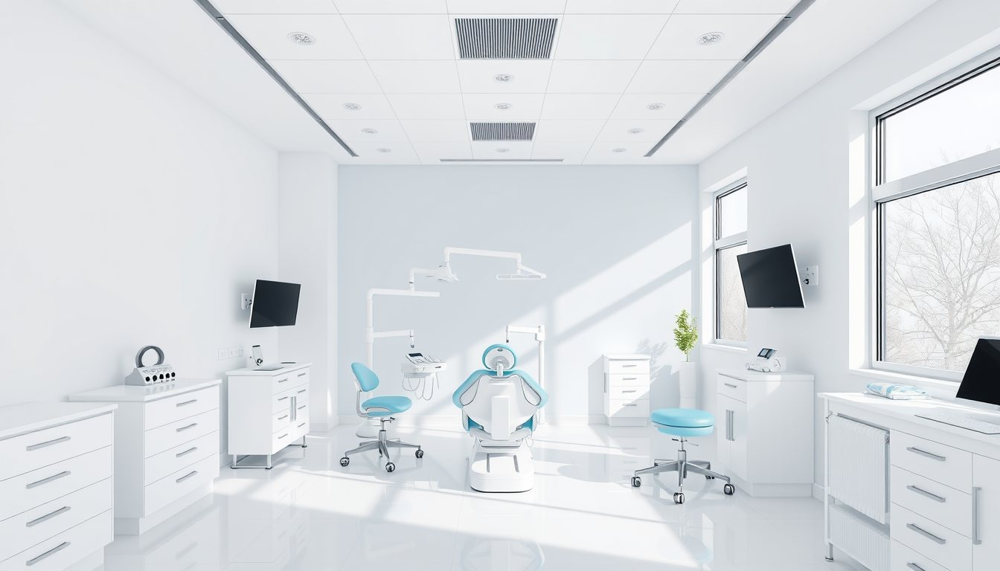
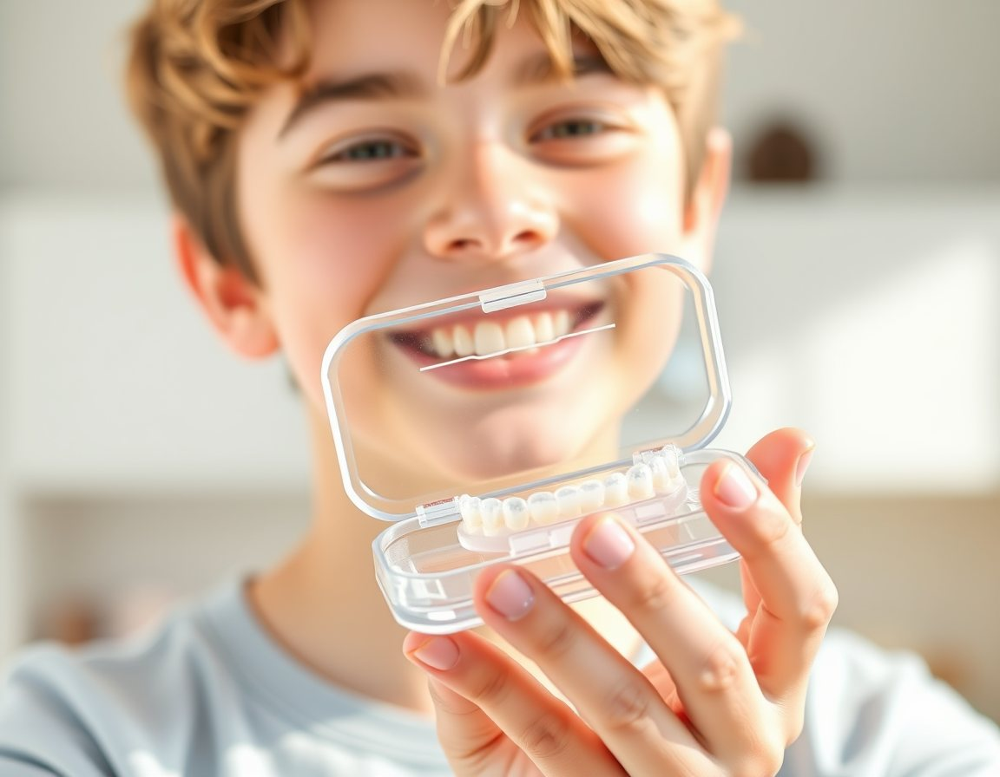

Şeffaf plak ve braket tedavilerinde dijital planlama. Kaydırın, küçük adımların nasıl birleştiğini görün.
Küçük adımlar, planlı ilerleme.
İkisi de dişleri hareket ettirir; hangisinin uygun olduğuna muayene ve dijital tarama sonrası birlikte karar verilir.


Ağız içi muayene, gerekirse panoramik ve sefalometrik röntgen.
Ölçü kaşığı yok; ağız içi tarayıcı ile birkaç dakikada 3B model.


Hareketlerin adım adım simülasyonu ekranda birlikte incelenir.
Tedavi seçeneği, tahmini süre ve kontrol takvimi konuşulur.
Tedaviye başladıysanız, ilk plak tarihinizi ve hekiminizin söylediği değişim aralığını girin; hangi plakta olmanız gerektiğini görün.

Ergenlik döneminde çene gelişimi sürerken yapılan değerlendirme, bazı tedavileri kolaylaştırabilir. Ebeveynler kontrollerde yanında olabilir.
Okul ve iş saatlerine uygun akşam randevuları.
Formu gönderin, klinik koordinatörümüz sizi arayıp uygun saati birlikte belirlesin.